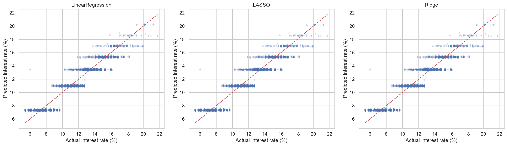
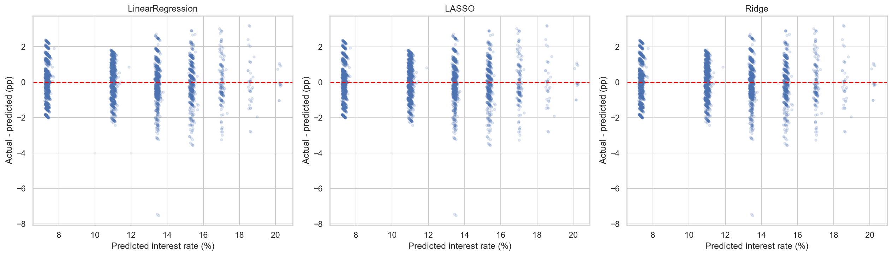
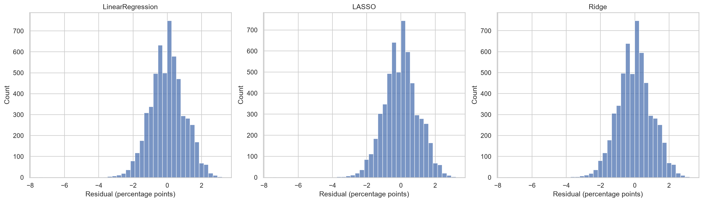
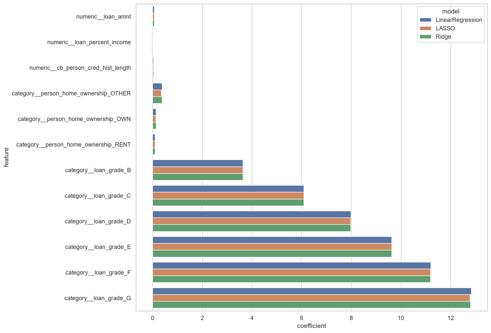
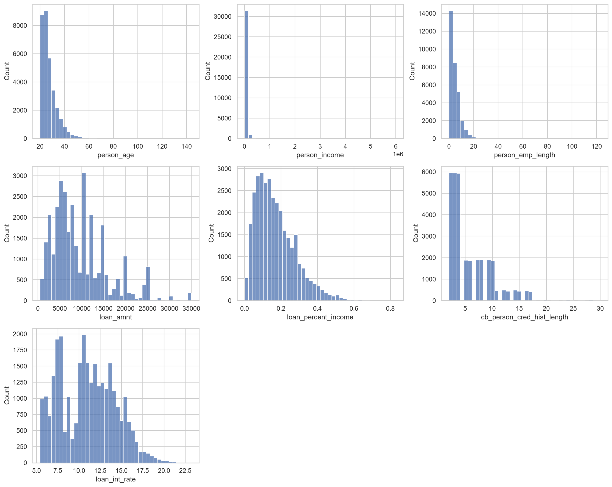
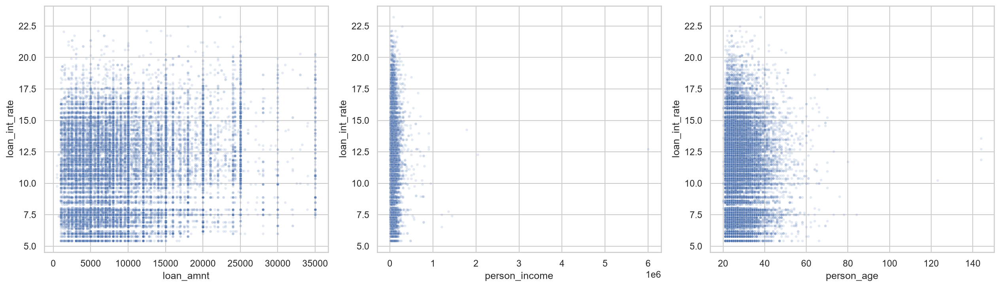
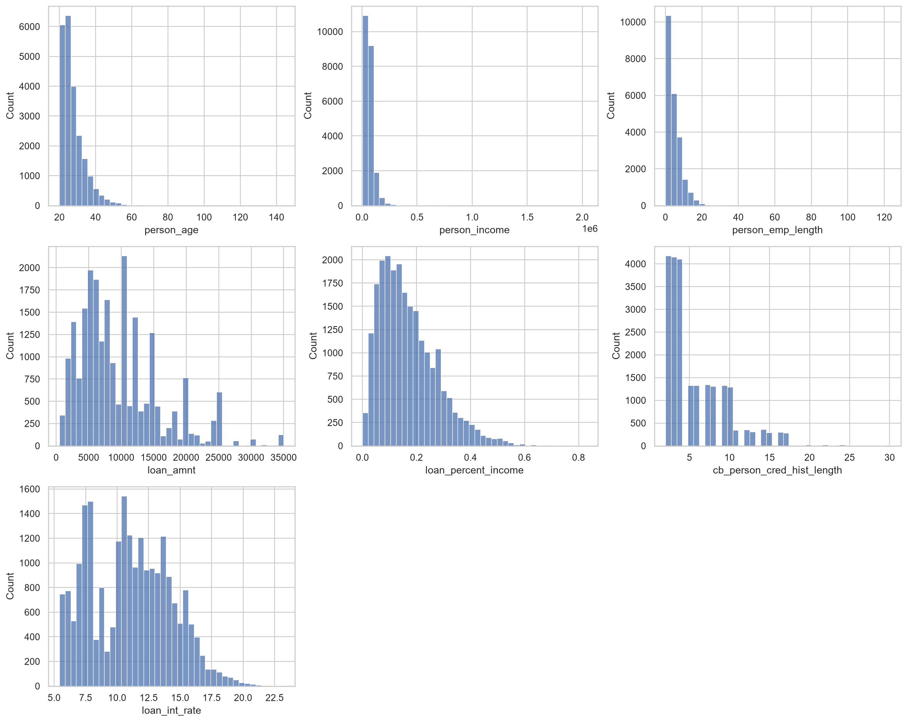
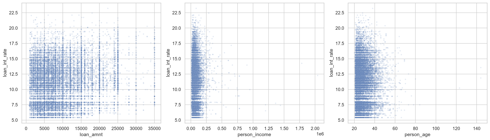
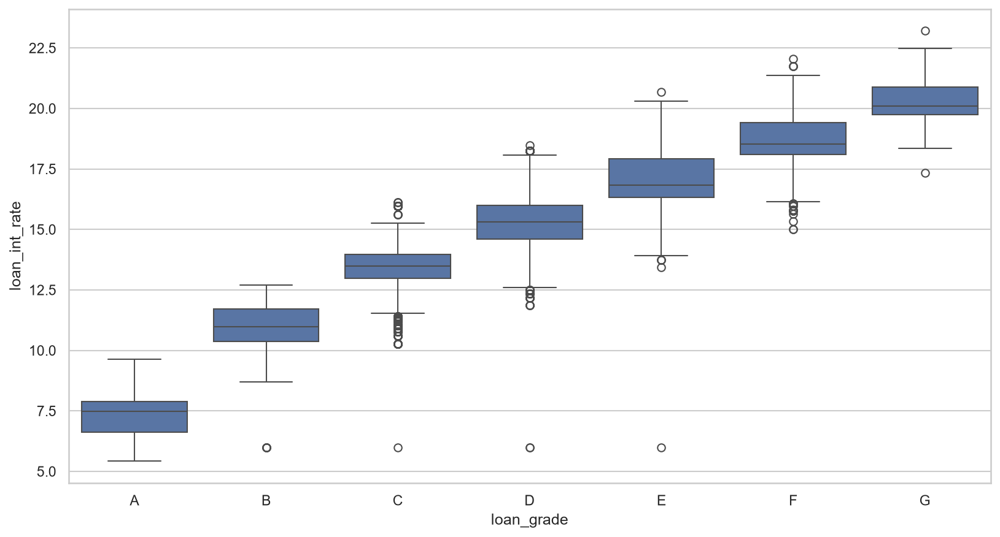

Цель — процентная ставка loan_int_rate. После удаления 3943 строк с пропусками и 137 дубликатов осталось 28501 строк. Обучение: 22800, тест: 5701, seed=42.
Числовые признаки стандартизированы, категории кодируются OneHotEncoder с исключением базовой категории. loan_int_rate и loan_status исключены из признаков. Pipeline обучает преобразования внутри каждого из 5 фолдов KFold. Параметры выбираются по минимальной CV RMSE; тест используется только для итоговых метрик. LASSO перебирает alpha 0.0001/0.001/0.01/0.1/1/10, Ridge — 0.01/0.1/1/10/100/1000. У обычной линейной регрессии подбираемого штрафа нет.
| model | CV_RMSE | MAE | RMSE | R2 | train_RMSE |
|---|---|---|---|---|---|
| LinearRegression | 1.006876 | 0.784865 | 1.000159 | 0.903575 | 1.005613 |
| LASSO | 1.006863 | 0.784725 | 1.000096 | 0.903587 | 1.005619 |
| Ridge | 1.006875 | 0.784813 | 1.000154 | 0.903576 | 1.005614 |
MAE — средняя абсолютная ошибка; RMSE сильнее штрафует большие ошибки. Обе ошибки измеряются в процентных пунктах ставки: например, прогноз 11% вместо 10% даёт ошибку 1 п.п. R² сравнивает квадратичную ошибку модели с прогнозом среднего значения; 0.904 означает около 90.4% объяснённой тестовой вариации, а не долю точных ответов. Остаток = истинное значение − прогноз.
{
"best_parameters": {},
"intercept": 7.30178376319885,
"iterations": null
}{
"best_parameters": {
"model__alpha": 0.0001
},
"intercept": 7.304721987014661,
"iterations": 18
}{
"best_parameters": {
"model__alpha": 0.1
},
"intercept": 7.302436724561612,
"iterations": null
}По CV RMSE выбрана LASSO. На тесте: MAE=0.7847 п.п., RMSE=1.0001 п.п., R²=0.9036. Различия трёх моделей очень малы; заметного преимущества регуляризации в этом запуске нет. LASSO обнулила 0 коэффициентов. Базовый прогноз среднего тренировочной ставки: RMSE=3.2215 п.п., MAE=2.6900 п.п., R²=-0.0004.
Сильный вклад имеют категории loan_grade: они отражают категорию кредита и тесно связаны со ставкой. Результат описывает прогноз при уже известной категории; порядок назначения категории и ставки в данных не установлен, поэтому это не доказательство возможности предсказать ставку до кредитного решения. Коэффициенты категорий сравниваются с базовой категорией, числовые — на одно стандартное отклонение. Коэффициенты не доказывают причинность. Аномальные возраст и стаж сохранены; удаление пропусков может менять состав выборки. Оценка основана на одном случайном разбиении, без проверки переноса на другой период. Полосы на графике прогнозов отражают сильное влияние loan_grade.








